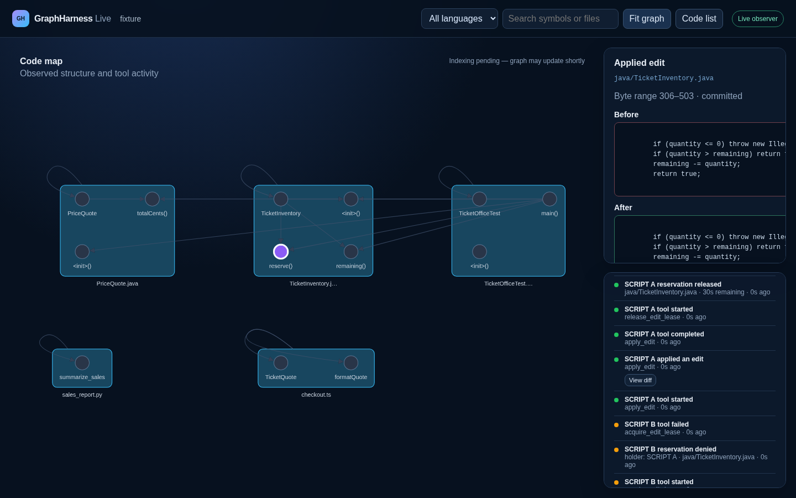

Focused context
Agents can search the graph and retrieve source linked to the same snapshot the browser displays.
LOCAL · OBSERVED · STRUCTURAL
GraphHarness Live maps a checkout, gives coding agents focused structural context, and lets you inspect the tool calls and reservations that actually happened.
The browser is an observer. It shows daemon-recorded activity, not an agent’s private reasoning.
ONE LOCAL DAEMON
Agents can search the graph and retrieve source linked to the same snapshot the browser displays.
Follow connections, inspect actual calls and distinguish a denial from a queue that does not exist.
Java method-body plans can be previewed, reserved, applied and released through the local coordinator.
SCRIPTED COORDINATION CHECK
This local browser check used two labeled SCRIPT clients on the public ticket-office fixture. One planned and reserved a Java file; the other received a real lease_busy response. The first client applied and released its plan.
This screenshot is scripted-client evidence, not evidence of autonomous agent work. The repository keeps separate real-agent journal evidence with configured-client details.

TWO REAL CODEX CLIENTS
Two clients inspect a public mixed-language fixture. The writer reserves a Java file; the reader receives a real conflict. A guarded edit changes zero-ticket reservations into a clean rejection, and the fixture checks pass afterward.
Recorded at 1.1× speed. Reservation timing was deliberately orchestrated. Both clients were configured with gpt-5.6-terra; provider-side model identity is not independently attested. No private reasoning is displayed.
RUN IT LOCALLY
GraphHarness is a local developer tool. The daemon is explicit, browser pairing is local, and the browser does not receive a bootstrap credential.
git clone https://github.com/CameronBadman/graph-harness.git
cd graph-harness
./scripts/build_live.sh
build/install/graphharness/bin/graphharness daemon examples/ticket-officeJava, TypeScript, JavaScript and Python structural navigation; opt-in coordinated Java method-body edits. The daemon identifies its parser and backend. New-language adapters provide definitions, source spans and containment; semantic calls and edits remain unavailable for them. Graph relationships may be incomplete, and a reservation coordinates cooperating daemon clients rather than arbitrary editor writes.
See capabilities, verification and limits in the README →